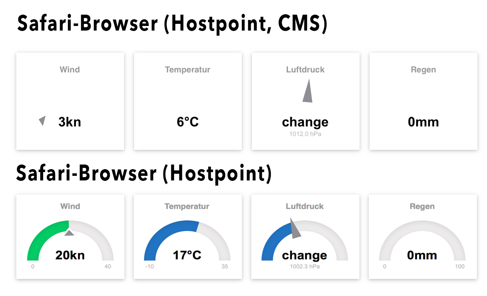

Wochenreport KW 15
Ziel dieser Woche
- API-Programmierung Output
- DB-Strukturprogrammierung
- DB mit historischen Daten erstellen
- HTML5 Grafiken programmieren
- Entwurf für die Darstellung der historischen Daten
Resultat / Erkenntnisse
API Programmierung
Die API ist soweit wie möglich fertig programmiert. Die einzelnen JSON-Objekte können aufgerufen werden. Im momentanen Zustand werden die Werte vom 31.03.2018 angezeigt. Dies ändert sich sobald die Werte des Wettertransmitters sowie des Pegelsensors aktualisiert werden. Beispiele für die API:
Es gibt noch folgende Details die nicht nach Wunsch sind oder noch erledigt werden müssen:
- Bei der Gesamtübersicht /sensors stimmt das erstellte JSON nicht
- Die URL müssen noch so umgestellt werden, dass diese mit und ohne / am Ende aufgerufen werden können
- Die Dokumentation der API muss noch erstellt werden
Die aufgezählten Schritte behindern die Weiterentwicklung der weiteren Aufgaben nicht.
DB Strukturprogrammierung / DB mit historischen Daten erstellen
Es wurde versucht die Tabelle datemaster zu importieren. Hierbei gab es jedoch Schwierigkeiten, siehe Probleme. Es wurde Recherchiert wie der Median erstellt werden kann mittels einer SQL Abfrage. Hierbei ist die Funktion MEDIAN() aufgetaucht, leider wird diese erst ab MariaDB 10.3 unterstützt. Hostpoint bietet jedoch nur die Version 10.1 an. Auch eine Anfrage bei Hostpoint um die Software auf den neusten Stand zu bringen war leider erfolglos. Hostpoint hat den Vorschlag gemacht den Median in einem PHP-Skript zu berechnen. Eine weitere Möglichkeit wäre jedoch auch die erstellung der Mittelwertes mit der Funktion AVG() welche unterstützt wird. Diese beiden Punkte müssen noch evaluiert werden.
HTML 5 Grafiken programmieren
Die Graphen, sowie die Gauges für die Darstellung der Wetterdaten sind für die Konzeptbesprechnung mit dem IG programmiert.
Neue Wetterseite
Graphen
Die Graphen sind im jetzigen Zustand so programmiert, dass sie fixe Achsen besitzen. Betrachtet man bspw. den Luftdruck, kann dies in dieser Konfiguration so fehl intepretiert werden, dass es keine Änderung gab. Somit sollte diese Achse automatisch skaliert werden. Beim Regengraph ist die Anordnung der Labels noch nicht korrekt, dies wird sowie die restlichen Graphen noch angepasst nach der Konzeptbesprechung. Der Graph mit der Windgeschwindigkeit kann soweit beibehalten werden. Der letzte Graph, die Windrichtung, ist soweit auch in Ordnung. Hier sollte der Punkt noch durch einen Pfeil sowie die skalierung in der Y-Achse auf 360 Grad begrentzt werden.
Die gesamten Graphen beziehen sich jetzt auf die neu aufgestellte Datenbank. Die Daten sind jedoch noch nicht aus der historischen Tabelle, da diese noch nicht besteht.
Entwurf für die Darstellung der historischen Daten
Die Daten der ursprünglichen Wetterstation stellten sich als wenig brauchbar heraus (Datenlücken, unrealistische Skalierung), sodass wir uns auf die mit der neuen Wetterstation gesammelten Daten konzentriert haben. Die Darstellung der Messwerte über Zeit schien uns nicht sehr aussagekräftig. Wir haben uns deshalb auf die Korrelationen und die Häufigkeiten der Messdaten konzentriert. Ein erster Entwurf des interaktiven Dashboards findet sich unter:
Probleme / Herausforderungen
DB Strukturprogrammierung
Die Tabelle datemaster, welche zusammen mit einem Experten in KW 12 erstellt wurde, konnte nicht importiert werden. Die Vermutung ist, dass die Datei mit 1.5 GB zu gross ist.
Fehlerhafte Darstellung der Anzeigeelemente in Mobile-Browsern und Safari
Für die Darstellung der aktuellen Daten verwenden wir das Javascirpt-Framework justgage.js. Sowohl lokal als auch direkt auf dem Hostpoint-Server werden die Anzeigelemente korrekt angezeigt. Sobald wir die Anzeigelemente aber in die CMS-php-Seite integrieren, werden die Anzeigelemente nicht mehr korrekt angezeigt (siehe Foto). Dies tritt aber nur beim Safari-Browser und bei allen Mobile-Browsern auf. Zur Zeit wissen wir nicht was die Ursache ist.
 Abb.: Fehlerhafte Anzeige
Journal / Zeitaufwand
19h API Programmierung Output
40h HTML5 Grafiken programmieren inkl. Fehlersuche
6h DB Strukturprogrammierung
8h Konzept und Entwurf Auswerteseite
2h Wochenreport